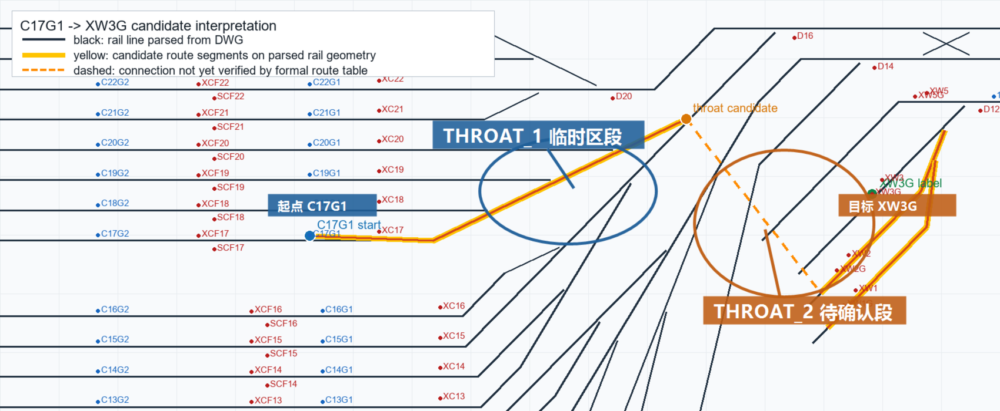
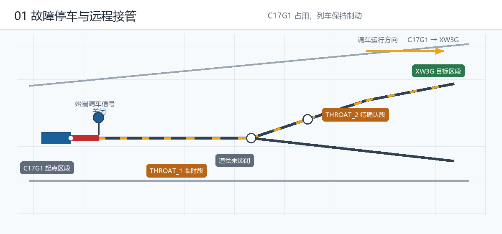
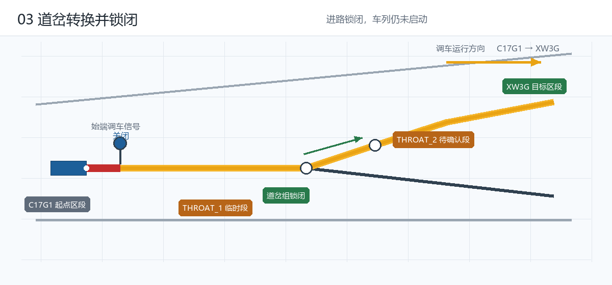
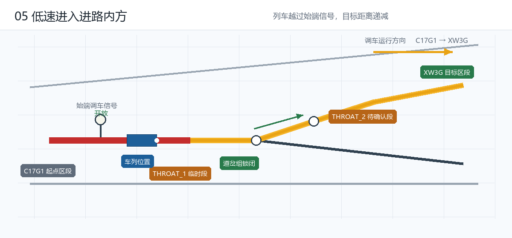
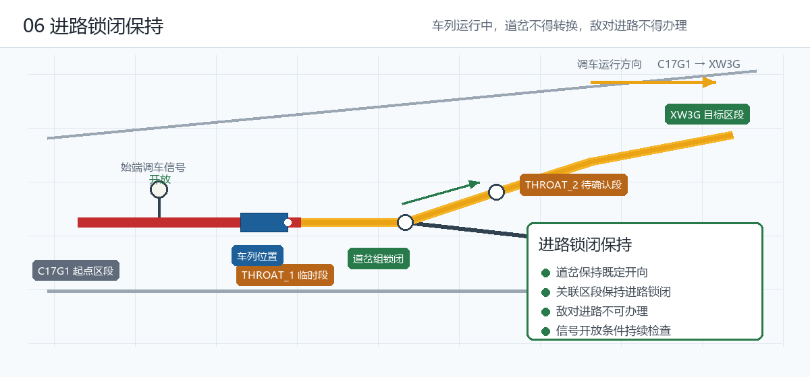
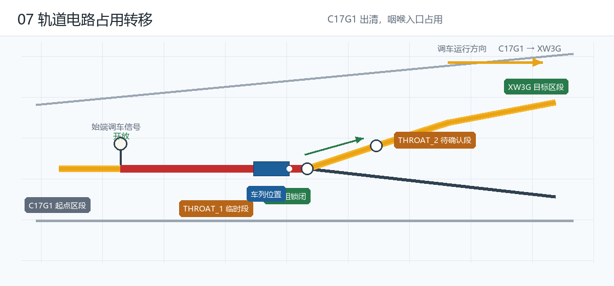
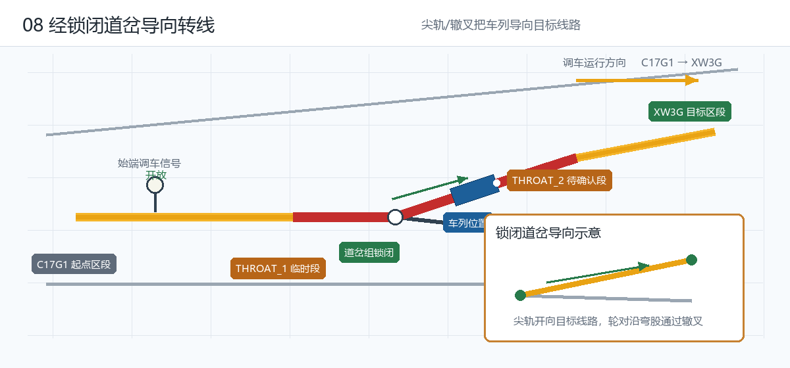
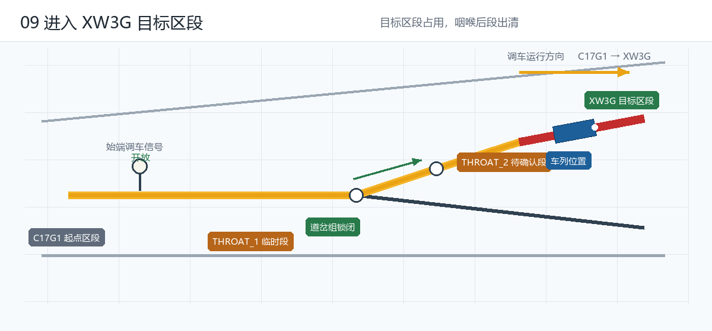
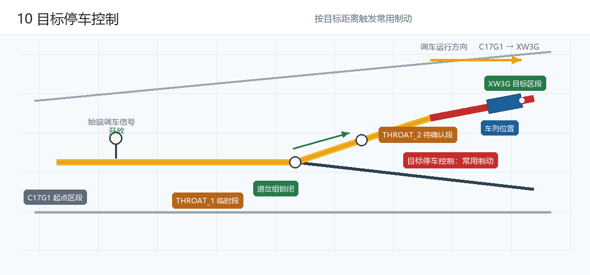
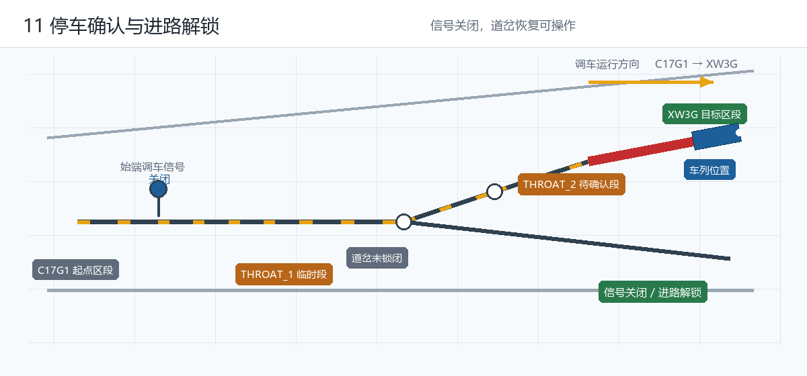

一、候选进路全景与图例
候选调车进路为 R_C17G1_XW3G：从 C17G1 存车/检修线，经咽喉道岔区进入 XW3G。图中黑色线为从 DWG 图纸解析的钢轨几何，黄色为候选进路段，橙色虚线为未经正式进路表核实的连接。

C17G1（起点）— 咽喉区（THROAT_1 临时区段、THROAT_2 待确认段）— XW3G（目标）。咽喉区两根标注仅表示拓扑占位，不代表真实轨道电路编号。图 2~12 与图 1 的抽象关系
C17G1、咽喉区、XW3G 在真实站场图中的相对关系；图 2~12 不是对图 1 的局部放大或 CAD 复原，而是面向 DMI/RO 动画展示抽取出的流程拓扑示意图。| 抽象对象 | 来自图 1 的依据 | 在阶段图中的表达 |
|---|---|---|
C17G1 | 候选起点/故障停车区段 | 显示列车初始占用、控制权交接、低速启动 |
| 咽喉区 | 候选路径进入道岔密集区并发生线路导向 | 简化为 THROAT_1 与 THROAT_2 两个临时拓扑段，突出道岔锁闭、占用转移和导向转线 |
XW3G | 候选目标轨道区段 | 显示目标区段占用、目标距离递减、制动停车和进路解锁 |
| 运行方向 | 按候选流程暂定为 C17G1 → XW3G | 统一用单向箭头标注，不再使用容易误读为道岔开向的 Y 形符号；真实方向仍需结合进路表确认 |
因此，阶段图保留的是业务逻辑关系：进路请求、道岔转换锁闭、调车信号开放、车列进入进路内方、轨道电路占用顺序转移、经锁闭道岔导向目标线、停车确认与进路解锁。其目的不是证明真实道岔编号和轨道电路编号已经确定，而是为后续 DMI 动画和状态机建立一个可替换的数据骨架。
术语先分清
| 术语 | 含义 | 对应本项目 |
|---|---|---|
| 调车作业 | 车列在站内/段所内不载客的移动、编组、转线等作业，速度低、距离短 | 整个仿真场景 |
| 调车进路 | 联锁为一次调车作业办理的、从始端调车信号机到终端的固定路径，含道岔位置、区段、敌对条件 | R_C17G1_XW3G |
| 转线作业 | 调车作业的一种：车列从一条线（股道/存车线）经咽喉区道岔进入另一条线 | C17G1 → 咽喉区 → XW3G |
THROAT_1/THROAT_2 只是临时区段占位，不应作为流程阶段名。二、前置阶段（运行前完成）
故障停车与控制权交接（远程接管）

C17G1 起点区段，起点区段显示占用，车载 ATO 退出、ATP 保持制动，地面远程端准备接管。该图保留完整候选进路轮廓，避免只放大局部起点。故障列车迫停于 C17G1。地面操作员申请接管，控制权由车载自动控制或本地控制切换为地面远程控制；列车仍保持停车，制动不立即缓解。该场景对应行业中的远程限制模式（RRM）/ 蠕动模式（CAM）——用于列车因故障迫停区间时，为处理故障争取时间。
调车进路办理（请求与联锁检查）
C17G1 → XW3G 调车进路，候选路径以待确认光带显示。联锁检查：起点列车占用状态、目标区段空闲、咽喉区轨道区段空闲、道岔可转换、无挤岔/失表/锁闭冲突、无敌对进路、防护信号可控、远端通信正常。操作员请求办理候选调车进路。联锁逐项检查能否建立进路——重点是敌对进路与防护条件：人员防护开关状态纳入联锁进路检查，封锁区域禁止办理任何列车/调车进路；已办理进路应立即关闭相应信号。未确认项在仿真中显示"待确认"，不伪装成真实联锁结果。
道岔转换与进路锁闭

咽喉区相关道岔转换到进路要求位置，确认到位后进入锁闭状态。此时列车仍停在 C17G1。道岔位置含义：定位为列车沿道岔默认方向运行，反位为列车被导向侧线或另一条连接线。仿真中道岔状态可从"未锁闭 → 转换中 → 锁闭"变化，进路保持锁闭显示为黄色。
调车信号开放，车载转入调车模式
始端调车信号开放后，列车获得低压许可，但受调车限速约束（候选 40 km/h）。车载转入调车模式，此时按调车运行规则进行顶棚限速监控，而非完全监控模式下的连续式一次制动曲线。事件流显示"调车信号开放，允许低速运行"。
三、运行阶段（本次重点：低速调车到进入目标区段）
车列进入进路内方（低速启动）

C17G1 压入始端调车信号机内方。图中列车位置已前移，起点和进路入口出现占用光带，进路由"锁闭等待"转入"占用通过"。- 车列从
C17G1起动，速度逐步上升，但不得超过调车限速。 C17G1仍显示占用，直到列车尾部出清起点区段。- 目标距离开始递减，车列进入进路内方是"占用通过阶段"的起点。
进路锁闭保持（调车进路占用通过）

C17G1 与咽喉区之间运行时，进路持续保持锁闭。图中单独标出锁闭保持约束：道岔保持既定开向，关联区段不可被其它作业占用，敌对进路不得办理，信号开放条件持续检查。运行过程中进路持续保持锁闭，道岔不得再转换、敌对进路不得办理。说明：调车速度低，一般不设接发车进路那样的"接近锁闭"；重点是进路锁闭保持与后续分段解锁。若需体现联锁深度，可把"接近锁闭或进路锁闭保持"列为待确认项。
轨道电路占用顺序转移

占用按运行方向逐区段前移：C17G1（占用）→ 咽喉区段1（占用）→ 咽喉区段2（占用）→ XW3G（占用）。DMI 动画应表现占用光带逐段移动，而不是列车图标横向跳线。
车列通过咽喉区（道岔导向转线）

THROAT_2 待确认段）。车列轮对经过锁闭道岔的尖轨/辙叉，被钢轨几何导向目标线路方向。右下角小图专门说明尖轨开向目标线路、车轮沿弯股通过辙叉的导向关系。咽喉区经道岔弯股的进路通常不电码化（无码区），因此本阶段的安全由"进路锁闭 + 地面调车信号 + 低速限速"共同保证，不依赖机车信号的连续信息。这是调车作业在咽喉区安全的行业性原因。
进入目标轨道区段 XW3G

XW3G，目标区段占用；咽喉区各段随车列出清依次解锁或保持至停车。此时进入目标停车控制：根据停车点（防护点）与安全距离计算制动曲线。车列进入 XW3G，占用光带移入目标区段。此时进路仍保持锁闭，等待列车停稳与作业完成。停车点（计算点）设在防护点前适当距离，两者之间为安全距离。
制动停车与进路解锁

XW3G 目标停车点附近。停稳并确认作业完成后，信号关闭、进路解锁（分段解锁或一次性解锁）、道岔恢复可操作。
- 按目标距离与制动距离判断触发常用制动，速度逐步下降至 0。
- 停稳后远程操作员确认，调车作业完成，进路解锁。
C17G1 至 XW3G 调车完成 → 信号关闭 → 进路解锁 → 道岔恢复可操作。至此"调车进路建立后的调车运行阶段"结束。四、业务状态序列与 DMI 联动
第一版可按下列状态驱动界面动画，状态命名已改为按业务阶段命名，THROAT_1/THROAT_2 仅保留在拓扑数据中作占位区段。
FAULT_STOPPED → REMOTE_TAKEOVER → SHUNT_ROUTE_REQUESTED → INTERLOCK_CHECKING
→ SWITCH_MOVING → ROUTE_LOCKED → SHUNT_SIGNAL_OPEN → TRAIN_ENTERED_ROUTE
→ ROUTE_OCCUPANCY_TRANSFER → THROAT_PASSING → ENTERED_TARGET_TRACK
→ TARGET_BRAKING → STOP_CONFIRMED → ROUTE_RELEASED阶段配图对照
| 业务状态 | 配图 | 线路图表现 |
|---|---|---|
| 故障停车 / 远程接管 | stage_01_fault_stop.png | C17G1 显示占用，列车停在起点 |
| 进路办理 / 联锁检查 | stage_02_route_request.png | 候选路径以虚线或待确认颜色显示 |
| 道岔转换 / 进路锁闭 | stage_03_switch_lock.png | 咽喉道岔组显示定位/反位组合并锁闭 |
| 调车信号开放 | stage_04_signal_open.png | 始端调车信号允许，进路黄光带保持 |
| 进入进路内方 | stage_05_enter_route.png | 列车光标越过始端信号机，沿锁闭进路移动 |
| 进路锁闭保持 | stage_06_route_lock_hold.png | 进路保持锁闭，道岔和区段不允许被其它作业使用 |
| 占用顺序转移 | stage_06_occupancy_transfer.png | 占用光带逐段前移，起点段出清变灰 |
| 通过咽喉区（转线） | stage_07_throat_guidance.png | 列车经锁闭道岔连续移动，道岔区段占用，并显示尖轨/辙叉导向示意 |
| 进入目标区段 | stage_08_enter_xw3g.png | 光带移入 XW3G，目标距离递减 |
| 制动停车 | stage_09_braking.png | 目标停车点前触发常用制动 |
| 停车确认 / 进路解锁 | stage_10_release.png | 信号关闭，黄光带熄灭，道岔恢复可操作 |
五、参考资料（资料依据）
- CTCS2 教材——调车模式（SH）与调车防护。 源文件：Ctrl+Click 下发资料\CTCS2教材.pdf · 第 18、19、25、32、33、34、43 页。要点：车载 ATP 控制模式含调车模式；"防止机车超过规定速度进行调车作业"；轨道电路/应答器电文含"调车危险"信息；SH（Shunting mode）；咽喉区经道岔弯股进路不电码化（无码区）。
- C2ATP 司机操作手册（RA_B0114006）——调车模式操作与限速。 源文件：下发资料\RA_B0114006_C2ATP_CASCO_8006_司机操作手册.pdf · 第 24、36、37、77、78、79、108、109 页。要点：调车模式在 DMI 显示"调车"；停车后按"调车"键进入调车模式，负责安全运行、禁改等级、退出转待机再注册；收到禁止调车包（ETCS-132）施紧急制动并提示"禁止调车"；目视/引导模式顶棚限速 40 km/h；机车信号模式 80 km/h。
- 全自动运行系统考察报告（20170509）——车辆段咽喉区与转线作业场景。 源文件：下发资料\关于赴上海、北京调研全自动运行系统的考察报告-20170509.pdf · 第 17、23、27、28 页。要点：车辆段自动驾驶区含出入段线、停车列检棚、洗车棚及咽喉区、试车线；出入段线设转换轨仅用于控制权交接；人员防护开关纳入联锁进路检查，封锁区域禁止办理调车进路；故障列车由救援车人工驾驶救援。
- 城市轨道交通全自动运行系统运营指南（白皮书）——远程控制运行的行业依据。 源文件：下发资料\11-《城市轨道交通全自动运行系统运营指南》白皮书.pdf · 第 9、13 页。要点：远程限制模式（RRM）；列车宜具备蠕动模式（CAM）、远程限制模式（RRM）等远程控制运行功能，以防列车因故障迫停区间；车辆基地全自动运行区域提供自动调车等功能。
- 铁路设计阶段划分及工程设计步骤——"转线"作为正式作业术语。 源文件：下发资料\1-技术培训资料-铁路设计阶段划分及工程设计步骤.pdf · 第 10、13 页。要点：动车段所集中控制系统（CCS）完成出入段（所）、洗刷、专项、转线等作业的调度指挥——"转线"是动车段所业务的正式术语。
- 闭塞与列控概论 · 第五讲 安全距离的分析——停车点与安全距离。 源文件：下发资料\闭塞与列控概论\闭塞与列控概论第五讲安全距离的分析.pdf · 第 1~3 页。要点：接车时股道出站信号机处为停车控制防护点，停车点（计算点）设在防护点前适当距离，其间为安全距离；"接车线末端无隔开设备时禁止办理相关调车作业"——对应本项目停车目标点/敌对进路确认项。
- 城际 C2+ATO 系统方案——车载工作模式全集。 源文件：下发资料\2016.10_城际C2+ATO系统方案.pptx · 第 34 页。要点：车载工作模式包括待机（SB）、部分监控（PS）、完全监控（FS）、引导（CO）、目视（OS）、调车（SH）、机车信号（CS）、休眠（SL）、隔离（IS）、自动驾驶（AM）。
说明：以上为本次检索到的行业资料依据，全部汇聚于此以便查阅；流程正文中不重复穿插资料引用。关键原始页码与要点已在各条目标明。
六、需确认事项
当前项目定位是仿真展示与验证原型，不是正式联锁系统设计。以下事项确认后即可落地第一版 DMI 仿真。
| # | 问题 | 作用 |
|---|---|---|
| 1 | 调车模式（SH）限速取值，候选 40 km/h 是否可接受？ | 决定速度表、限速曲线与超速防护阈值 |
| 2 | 咽喉区 THROAT_1/THROAT_2 的真实轨道电路编号、道岔编号及定位/反位要求？ | 替换临时占位，决定拓扑与动画 |
| 3 | 始端调车信号机对象（XC17 / SCF17 / XCF17 或实际调车信号机）？ | 决定"信号开放"显示对象 |
| 4 | 停车点位置：XW3G 内、信号机前还是车挡/绝缘节前？ | 涉及安全距离与目标距离 |
| 5 | 进路解锁方式：分段解锁还是一次性解锁？ | 决定解锁动画与状态迁移 |
| 6 | 是否在 DMI 中演示"调车危险"与"禁止调车"（ETCS-132）防护？ | 高价值安全防护展示点 |